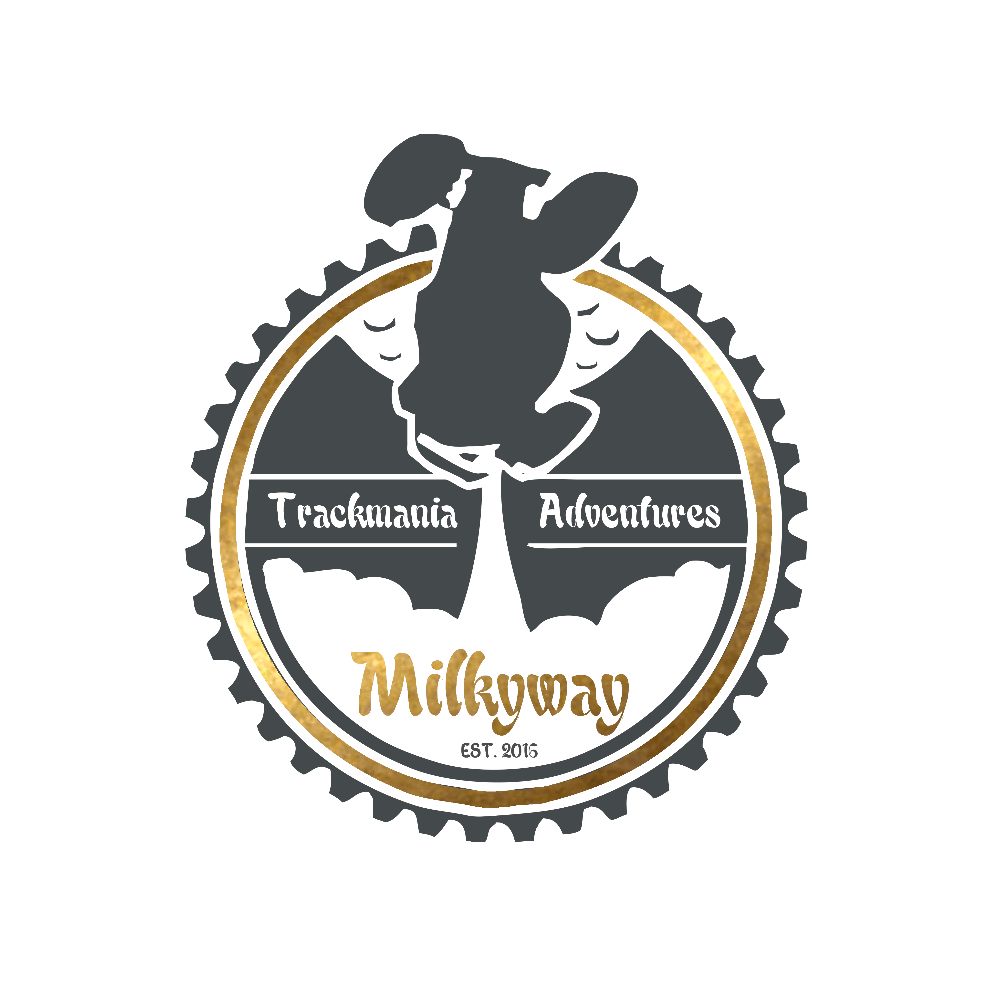

¬Milkyway»
Milkyway is one of the most, if not the most, succesfull rpg team ever on trackmaniaStadium2.
The team was Created in 2015 by the player ¬мѡ» Chocolleight, and it haven't lost a single match to this day.
The team is composed of many of the best rpg players in the world, who, in order to join the tram, need to succesfully
passed a trial wich consists in a dozen times to beat on different RPG maps.
Today, in 2021, Milkyway still holds the spot of the best rpg team and still actively participates
in the differents tournament happening now and then on the Rpg scene